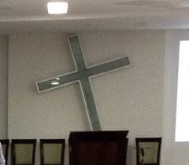
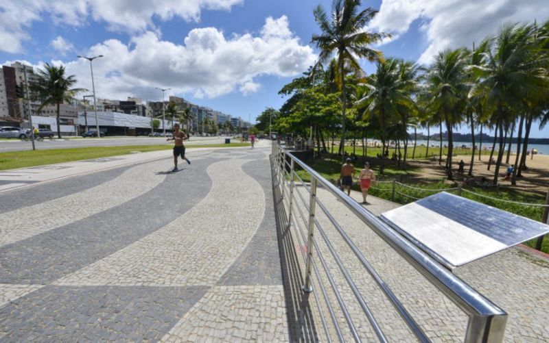

Missão
Quem somos
Uma igreja que nasceu
caminhando à beira-mar
Somos uma igreja cristã, protestante e reformada, parte da Igreja Presbiteriana do Brasil. Tudo começou com orações — e com uma conversa entre irmãs no calçadão de Camburi.
- 1993
- primeiras reuniões de oração
- 1997
- emancipação, em 14 de dezembro
- 122
- membros na fundação
- 30
- anos de história em 2027
Conheça a IPJC
Uma família reunida em torno da Palavra
Aos domingos, às 9h e às 18h30, nos reunimos para adorar a Deus, ouvir a sua Palavra e celebrar os sacramentos. Durante a semana, a vida da igreja continua nos pequenos encontros, nos ministérios e no serviço ao bairro.
Nossa história
Dia após dia, desde 1993
De um pequeno grupo em oração a uma igreja que planta, adota e apoia outras comunidades. Toque em cada ano para conhecer a caminhada.
Identidade visual
Uma marca que nasce da Palavra
Cada forma do nosso símbolo conta um pedaço da nossa história. Escolha um elemento para ver como ele aparece na marca.
Os quatro grafismos se encontram e, no espaço entre eles, surge a cruz — inspirada na cruz que há anos compõe o ambiente do nosso templo. Ela está vazia: Cristo ressuscitou, e nisso está a nossa esperança.

As formas onduladas vêm da pedra portuguesa do calçadão da praia de Camburi. Segundo os membros fundadores, a igreja começou numa conversa entre irmãs que caminhavam por ali. O lugar do encontro virou parte da nossa marca.

Juntas, as formas curvas lembram aspas — sinal da Palavra de Deus, viva e permanente. Enquanto tudo passa, o evangelho permanece. É o versículo que sustenta a nossa identidade.
Em cima, o azul do céu, que traz tranquilidade em meio ao alvoroço do dia. Embaixo, o verde da terra: esperança, crescimento e renovação. “Passará o céu e a terra” — mas a Palavra fica.
A assinatura une símbolo e nome. A tipografia do nome é a mesma da sarça da IPB — sinal de que caminhamos com a Igreja Presbiteriana do Brasil.
- AzulCéu · tranquilidade
- Verde claroTerra · esperança
- CinzaSobriedade
- Verde escuroSarça da IPB
Nossa denominação
Parte da Igreja Presbiteriana do Brasil
A IPJC é uma das igrejas da Igreja Presbiteriana do Brasil (IPB), uma família de igrejas reformadas presente em todo o país. A IPB nasceu do trabalho missionário de Ashbel Green Simonton, que chegou ao Rio de Janeiro em 12 de agosto de 1859. Em janeiro de 1862 foi organizada a primeira igreja, a Igreja Presbiteriana do Rio de Janeiro, e em 1888 as igrejas brasileiras formaram um sínodo próprio, autônomo.
Hoje a IPB é a maior denominação presbiteriana e reformada do Brasil, com igrejas em todos os estados.
Conheça a IPBComo a igreja é governada
“Presbiteriana” vem de presbítero, o ancião. A igreja é governada por concílios formados por pastores e presbíteros eleitos pela própria igreja:
- ConselhoPastor e presbíteros da igreja local.
- PresbitérioReúne as igrejas de uma região.
- SínodoReúne presbitérios.
- Supremo ConcílioRepresenta toda a IPB.
Visão
Valores
O que nos move
Quer conhecer o que cremos?
Somos uma igreja reformada, firmada nas Escrituras e nos Símbolos de Fé de Westminster.